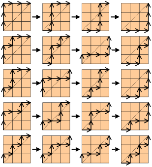
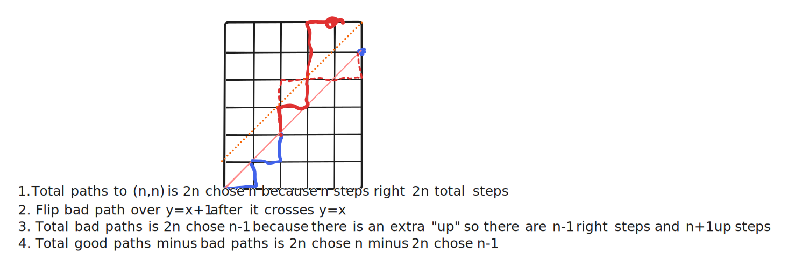

<!DOCTYPE html>
<html lang="en">
  <head>
    <meta charset="utf-8" />
    <meta name="viewport" content="width=device-width, initial-scale=1.0, maximum-scale=1.0, user-scalable=no" />

    <title></title>
    <link rel="stylesheet" href="dist/reveal.css" />
    <link rel="stylesheet" href="dist/theme/moon.css" id="theme" />
    <link rel="stylesheet" href="plugin/highlight/zenburn.css" />
	<link rel="stylesheet" href="css/layout.css" />
	<link rel="stylesheet" href="plugin/customcontrols/style.css">
  <script defer src="https://cdn.tailwindcss.com"></script>
  <script src="https://d3js.org/d3.v7.min.js"></script>
  <script src="https://unpkg.com/d3fc"></script>


    <script defer src="dist/fontawesome/all.min.js"></script>

	<script type="text/javascript">
		var forgetPop = true;
		function onPopState(event) {
			if(forgetPop){
				forgetPop = false;
			} else {
				parent.postMessage(event.target.location.href, "app://obsidian.md");
			}
        }
		window.onpopstate = onPopState;
		window.onmessage = event => {
			if(event.data == "reload"){
				window.document.location.reload();
			}
			forgetPop = true;
		}

		function fitElements(){
			const itemsToFit = document.getElementsByClassName('fitText');
			for (const item in itemsToFit) {
				if (Object.hasOwnProperty.call(itemsToFit, item)) {
					var element = itemsToFit[item];
					fitElement(element,1, 1000);
					element.classList.remove('fitText');
				}
			}
		}

		function fitElement(element, start, end){

			let size = (end + start) / 2;
			element.style.fontSize = `${size}px`;

			if(Math.abs(start - end) < 1){
				while(element.scrollHeight > element.offsetHeight){
					size--;
					element.style.fontSize = `${size}px`;
				}
				return;
			}

			if(element.scrollHeight > element.offsetHeight){
				fitElement(element, start, size);
			} else {
				fitElement(element, size, end);
			}		
		}


		document.onreadystatechange = () => {
			fitElements();
			if (document.readyState === 'complete') {
				if (window.location.href.indexOf("?export") != -1){
					parent.postMessage(event.target.location.href, "app://obsidian.md");
				}
				if (window.location.href.indexOf("print-pdf") != -1){
					let stateCheck = setInterval(() => {
						clearInterval(stateCheck);
						window.print();
					}, 250);
				}
			}
	};


        </script>
  </head>
  <body>
  <script>
    function makeChart(chart, parenthesesString){

        const movements = parenthesesString.split('').map(p => p === '1' ? [1, 0] : [0, 1]);
        // Set up colors for each step
        const colorScale = d3.scaleOrdinal(d3.schemeCategory10);

        // Calculate the coordinates of the lattice path
        const coordinates = [];
        let x = 0, y = 0;
        // Push the initial position (0, 0)
        coordinates.push({ x, y, color: colorScale(-1) });
        movements.forEach((movement, index) => {
            x += movement[0];
            y += movement[1];
            coordinates.push({ x, y, color: colorScale(index) });
        });
        
        // Set up D3.js
      const svg = d3.select(`#${chart}`);
        svg.selectAll('*').remove();
        const width = +svg.attr("width");
        const height = +svg.attr("height");
        const margin = { top: 20, right: 20, bottom: 40, left: 40 };
        const innerWidth = width - margin.left - margin.right;
        const innerHeight = height - margin.top - margin.bottom;

        // Define the scale for the axes
        const xScale = d3.scaleLinear()
            .domain([d3.min(coordinates, d => d.x), d3.max(coordinates, d => d.x)])
            .range([0, innerWidth]);

        const yScale = d3.scaleLinear()
            .domain([d3.min(coordinates, d => d.y), d3.max(coordinates, d => d.y)])
            .range([innerHeight, 0]);

        var gridline = fc.annotationSvgGridline()
            .xScale(xScale)
            .yScale(yScale);
        // Draw the lattice path
        svg.append("g")
            .attr("transform", `translate(${margin.left}, ${margin.top})`)            
            .selectAll("line")
            .data(coordinates.slice(0, -1))
            .enter().append("line")
            .attr("x1", d => xScale(d.x))
            .attr("y1", d => yScale(d.y))
            .attr("x2", (d, i) => xScale(coordinates[i + 1].x))
            .attr("y2", (d, i) => yScale(coordinates[i + 1].y))
            .style("stroke", d => d.color)
            .style("stroke-width", 10)
        svg.append("line")
            .attr("transform", `translate(${margin.left}, ${margin.top})`) 
            .attr("x1", xScale(d3.min(coordinates, d => d.x)))
            .attr("y1", yScale(d3.min(coordinates, d => d.x)))
            .attr("x2", xScale(d3.max(coordinates, d => d.x)))
            .attr("y2", yScale(d3.max(coordinates, d => d.x)))
            .style("stroke", "red")
            .style("stroke-dasharray", "4");
        // Add axes
        svg.append("g")
            .call(gridline)
            .attr("transform", `translate(${margin.left}, ${margin.top})`)
            .selectAll("text")
            .data(coordinates)
            .enter().append("text")
            .attr("x", d => xScale(d.x) + 5) // Shift label to the right
            .attr("y", d => yScale(d.y) - 5) // Shift label up
            .text((d, i) => `${i}`)
            .style("font-size", "10px")
            .attr("fill", "white");
        const xAxis = d3.axisBottom(xScale);
        const yAxis = d3.axisLeft(yScale);

        svg.append("g")
            .attr("transform", `translate(${margin.left}, ${margin.top + innerHeight})`)
            .call(xAxis);

        svg.append("g")
            .attr("transform", `translate(${margin.left}, ${margin.top})`)
            .call(yAxis);
    }
     let counter = 0;
    function deepCopyMap(map) {
      return new Map(JSON.parse(JSON.stringify(Array.from(map))));
    }
    let zero_list_list = [];
    let zero_positions_list = [];

    function keyGen(length) {
    zero_list_list = [];
    zero_positions_list = [];

      counter = 0;
      nums = new Map();
      const half_len = Math.floor(length / 2);
      const zero_list = Array.from({ length: half_len }, (_, i) => i+1);
      const zero_positions = new Map();
        zero_list_list[0] = Array.from(zero_list);
      console.log(zero_list, zero_positions)
      let valid_spot = 0;
      for (let i = 0; i < half_len-1; i++) {
        const index = Math.floor(Math.random() * (half_len - valid_spot)) + valid_spot;
        for (let j = half_len-1; j >= index; j--) {
          if (zero_list[j] != 1) {
            zero_list[j] -= 1;
          } else {
            zero_list[j] -= 1;
            valid_spot = j + 1;
            break;
          }
        }
        zero_list_list[i+1] = Array.from(zero_list);
        zero_positions_list[i] = deepCopyMap(zero_positions);
        zero_positions.set(index, zero_positions.get(index) + 1 || 1);
      }
      var list_ptr = [];
      for (let i = 0; i < half_len; i++) {
        list_ptr.push(1);
        const value = zero_positions.get(i) || 0;
        list_ptr.push(...Array(value).fill(0));
      }
      zero_positions.set(half_len-1, zero_positions.get(half_len-1) + 1 || 1);
      zero_positions_list[half_len-1] = deepCopyMap(zero_positions);
      list_ptr.push(0);
      console.log(zero_list_list, zero_positions_list);
      return list_ptr;
    }

    let key;
   let new_str_list = [];
    let onHold_list = [];
     let x_list = [];
   window.onload = function(){   
  function encrypt(x, key) {
  // create a string 'new_str' to hold the new message and onHold to keep a list of characters that still need to be added to the string
  let new_str = '';
  let onHold = [];
  // Check each character in the key. The character is first added to the onHold list if there is a character. Then if the next key is a 1 nothing happens  and if it is a 0 then the first character on the on hold list is removed and added to the new string
  for (let character = 0; character < key.length; character++) {
    if (x.length > character) {
      onHold.unshift(x[character]);
    }
    new_str_list[character] = new_str;
    onHold_list[character] = Array.from(onHold);
    x_list[character] = Array.from([...x].slice(character+1))
    if (key[character] === '1') {
      continue;
    } else {
      new_str += onHold[0];
      onHold.shift();
    }
  }
  return new_str;
  }
function decrypt(x, key) {
  // stores the text being decrypted
  let onHold = [];
  // holds which spaces have been filled
  let filled = [];
  // index of the current character being decrypted from the message
  let count = 0;
  for (let character = 0; character < key.length; character++) {
    // if the current index is greater than the length of the message then set filled to all numbers not included in the list filled
    if (character >= x.length) {
      filled = Array.from(new Set(Array.from(Array(x.length + 1).keys()))).filter(i => !filled.includes(i));
      // get the list starting at index count and reverse the list
      x = x.slice(count).split('').reverse().join('');
      // insert remaining characters into the on hold list at the indexes which have no yet been filled
      for (let i = 0; i < x.length; i++) {
        onHold.splice(filled[i], 0, x[i]);
      }
      break;
    }
    // if the current number in the key is 0 add the corresponding message character to onHold, increment count, and mark the current spot as filled
    else if (key[character] === '0') {
      onHold.splice(character, 0, x[count]);
      count++;
      filled.push(character);
    }
  }
  return onHold.join('');
}
     let encryptKey;
     let encryptin = document.getElementById("encrypt");
     encryptin.addEventListener("click", function(){
        let message = document.getElementById("message");
       let cipher = document.getElementById("encryptedtext");
       encryptKey = keyGen(message.value.length*2).join("");
       console.log(encryptKey, message.value);
       cipher.innerHTML = `Encrypted text: ${encrypt(message.value, encryptKey)}<br> Key: ${encryptKey}<br><br>Decrypted text: ${decrypt(encrypt(message.value, encryptKey), encryptKey)}`;
       makeChart("chart2", encryptKey);
     });
     let nexthold = document.getElementById("nexthold");
     let prevhold = document.getElementById("prevhold");
     let counter2 = 0;
     nexthold.addEventListener('click', function(){
       let key = document.getElementById("key"); 
       key.innerHTML = `Key: ${encryptKey}<br>Characters on hold: ${onHold_list[counter2]}<br>Encrypted text: ${new_str_list[counter2]}<br>Text: ${x_list[counter2]}`;
      counter2++;
     });
     prevhold.addEventListener("click", function(){
      let key = document.getElementById("key"); 
       key.innerHTML = `Key: ${encryptKey}<br>Characters on hold: ${onHold_list[counter2]}<br>Text: ${new_str_list[counter2]}<br>Text: ${x_list[counter2]}`;
      counter2--;
     });
      let button = document.getElementById("dyckgen");
      button.addEventListener("click", function(){
        let len = document.getElementById("lencat").value;

        const parenthesesString = keyGen(parseInt(len)).join("");
        document.getElementById("catalan").innerHTML = parenthesesString;
        document.getElementById("catalan2").innerHTML = parenthesesString;
       
        // Input string of parentheses

        // Parse the string and convert it into movements
        makeChart("chart", parenthesesString)
      });
     let nextnum = document.getElementById("nextnum");
     let prevnum = document.getElementById("prevnum");
     nextnum.addEventListener("click", function(){
        let catarr = document.getElementById("catarr");
       let catalannum = document.getElementById("catalan");
        catarr.innerHTML = zero_list_list[counter];
      var list_ptr = [];
      for (let i = 0; i < zero_list_list[counter].length; i++) {
        list_ptr.push(1);
        const value = zero_positions_list[counter].get(i) || 0;
        list_ptr.push(...Array(value).fill(0));
      }
      if(list_ptr.length+1 == zero_list_list[counter].length*2)
      list_ptr.push(0);
      catalannum.innerHTML = list_ptr.join('')
       counter++;
     });
      prevnum.addEventListener("click", function(){

       counter--;
        let catarr = document.getElementById("catarr");
       let catalannum = document.getElementById("catalan");
        catarr.innerHTML = zero_list_list[counter];
      var list_ptr = [];
      for (let i = 0; i < zero_list_list[counter].length; i++) {
        list_ptr.push(1);
        const value = zero_positions_list[counter].get(i) || 0;
        list_ptr.push(...Array(value).fill(0));
      }
      if(list_ptr.length+1 == zero_list_list[counter].length*2) list_ptr.push(0);
      catalannum.innerHTML = list_ptr.join('')
     });

  }
    </script>
    <div class="reveal">
      <div class="slides"><section  data-markdown><script type="text/template"><!-- .slide: class="drop" -->
<div class="" style="position: absolute; left: 0px; top: 0px; height: 700px; width: 960px; min-height: 700px; display: flex; flex-direction: column; align-items: center; justify-content: center" absolute="true">

# Catalan Numbers
Sebastian Benatar
</div></script></section><section  data-markdown><script type="text/template"><!-- .slide: class="drop" -->
<div class="" style="position: absolute; left: 0px; top: 0px; height: 700px; width: 960px; min-height: 700px; display: flex; flex-direction: column; align-items: center; justify-content: center" absolute="true">

### Research Questions
How are Catalan numbers related to cryptography? How can Catalan numbers be used to cipher a message?
</div></script></section><section  data-markdown><script type="text/template"><!-- .slide: class="drop" -->
<div class="" style="position: absolute; left: 0px; top: 0px; height: 700px; width: 960px; min-height: 700px; display: flex; flex-direction: column; align-items: center; justify-content: center" absolute="true">

# History
<div class="flex flex-row">
<div class="flex flex-col">
<span>- The first recorded usage by Mingantu through his work on trigonometric identities and power series.</span>
<span>- Named after Eugène Charles Catalan</span>
</div>

</div>
</div></script></section><section  data-markdown><script type="text/template"><!-- .slide: class="drop" -->
<div class="" style="position: absolute; left: 0px; top: 0px; height: 700px; width: 960px; min-height: 700px; display: flex; flex-direction: column; align-items: center; justify-content: center" absolute="true">

## Lattice paths


<em>Lattice paths are paths that travel through a mxn grid</em>
</div></script></section><section  data-markdown><script type="text/template"><!-- .slide: class="drop" -->
<div class="" style="position: absolute; left: 0px; top: 0px; height: 700px; width: 960px; min-height: 700px; display: flex; flex-direction: column; align-items: center; justify-content: center" absolute="true">

## Monotonic lattice path


`${2n\choose n}-{2n\choose n-1}$`
</div></script></section><section  data-markdown><script type="text/template"><!-- .slide: class="drop" -->
<div class="" style="position: absolute; left: 0px; top: 0px; height: 700px; width: 960px; min-height: 700px; display: flex; flex-direction: column; align-items: center; justify-content: center" absolute="true">

#### Getting simpler formula
$
\frac{2n}{n!n!}-\frac{2n}{(n+1)!(n-1)!}
$

$
\frac{2n}{n!}\left(\frac{1}{n!}-\frac{1}{(n+1)(n-1)!}\right)
$

$
\frac{2n}{n!}\left(\frac{n+1}{n!(n+1)}-\frac{n}{n!(n+1)}\right)
$

$
\frac{2n}{n!}\left(\frac{1}{n!(n+1)}\right)
$

`$\binom{2n}{n} - \binom{2n}{n-1} = \binom{2n}{n} \frac{1}{n+1}$`
</div></script></section><section  data-markdown><script type="text/template"><!-- .slide: class="drop" -->
<div class="" style="position: absolute; left: 0px; top: 0px; height: 700px; width: 960px; min-height: 700px; display: flex; flex-direction: column; align-items: center; justify-content: center" absolute="true">

### Recursive formula
`$c_{n-1} = \frac{(2n-2)!}{(n-1)!(n-1)!} \frac{1}{n}$`

`$\frac{c_{n-1}*(2n-1)*2n*n}{n*n(n+1)}$`

`$\frac{c_{n-1}*(2n-1)*2}{(n+1)}$`

Therefore, `$\frac{{4n-2}}{{n+1}} \cdot c_{n-1} = c_n$`
</div></script></section><section  data-markdown><script type="text/template"><!-- .slide: class="drop" -->
<div class="" style="position: absolute; left: 0px; top: 0px; height: 700px; width: 960px; min-height: 700px; display: flex; flex-direction: column; align-items: center; justify-content: center" absolute="true">

## Dyck words
((()())())

XXXYXYYXYY

1110100100
</div></script></section><section  data-markdown><script type="text/template"><!-- .slide: class="drop" -->
<div class="" style="position: absolute; left: 0px; top: 0px; height: 700px; width: 960px; min-height: 700px; display: flex; flex-direction: column; align-items: center; justify-content: center" absolute="true">

## Dyck word generation
<input class="text-black" id='lencat' placeholder="length"></input>
<button id="dyckgen" class="bg-blue-500 hover:bg-blue-700 text-white font-bold py-2 px-4 rounded-full">Generate</button>
<p class="text-balance" id="catalan"> </p>
<p id="catarr"></p>
<div class="inline-flex">
  <button id='prevnum' class="bg-gray-300 hover:bg-gray-400 text-gray-800 font-bold py-2 px-4 rounded-l">
    Prev
  </button>
  <button id='nextnum' class="bg-gray-300 hover:bg-gray-400 text-gray-800 font-bold py-2 px-4 rounded-r">
    Next
  </button>
</div>
</div></script></section><section  data-markdown><script type="text/template"><!-- .slide: class="drop" -->
<div class="" style="position: absolute; left: 0px; top: 0px; height: 700px; width: 960px; min-height: 700px; display: flex; flex-direction: column; align-items: center; justify-content: center" absolute="true">

## Monotonic Lattice Path
<p clsss="text-balance" id="catalan2"> </p>
<svg id="chart" width="500" height="500"></svg>
</div></script></section>
<section  data-markdown><script type="text/template"><!-- .slide: class="drop" -->
<div class="" style="position: absolute; left: 0px; top: 0px; height: 700px; width: 960px; min-height: 700px; display: flex; flex-direction: column; align-items: center; justify-content: center" absolute="true">

## Cipher

<input class="text-black" id='message' placeholder="message"></input> 
<button id="encrypt" class="bg-blue-500 hover:bg-blue-700 text-white font-bold py-2 px-4 rounded-full">Encrypt</button>
<p id="encryptedtext"></p>
</div></script></section>
<section  data-markdown><script type="text/template"><!-- .slide: class="drop" -->
<div class="" style="position: absolute; left: 0px; top: 0px; height: 700px; width: 960px; min-height: 700px; display: flex; flex-direction: column; align-items: center; justify-content: center" absolute="true">

## Cipher Method
<div class="flex flex-row">
<div class="flex flex-col">
<p id="hold"></p>
<div class="inline-flex">
  <button id='prevhold' class="bg-gray-300 hover:bg-gray-400 text-gray-800 font-bold py-2 px-4 rounded-l">
    Prev
  </button>
  <button id='nexthold' class="bg-gray-300 hover:bg-gray-400 text-gray-800 font-bold py-2 px-4 rounded-r">
    Next
  </button>
</div>
<p id="key"></p>
</div>

<svg id="chart2" width="500" height="500"></svg>
</div>
</div>
</div></script></section>

<section  data-markdown><script type="text/template"><!-- .slide: class="drop" -->
<div class="" style="position: absolute; left: 0px; top: 0px; height: 700px; width: 960px; min-height: 700px; display: flex; flex-direction: column; align-items: center; justify-content: center" absolute="true">

## Applications
- Sending secret messages to friends
- Cipher using Catalan numbers in conjunction with other methods
</div></script></section><section  data-markdown><script type="text/template"><!-- .slide: class="drop" -->
<div class="" style="position: absolute; left: 0px; top: 0px; height: 700px; width: 960px; min-height: 700px; display: flex; flex-direction: column; align-items: center; justify-content: center" absolute="true">

## Extension
- interpreting Feynman diagrams
- Binary trees in Linguistics
- Cryptocurrency hash rate


</div></script></section><section  data-markdown><script type="text/template"><!-- .slide: class="drop" -->
<div class="" style="position: absolute; left: 0px; top: 0px; height: 700px; width: 960px; min-height: 700px; display: flex; flex-direction: column; align-items: center; justify-content: center" absolute="true">

## Reference List
<div class="csl-bib-body" style="line-height: 2; margin-left: 2em; text-indent:-2em;">
  <div class="csl-entry">Aybeyan Selim and Muzafer SARAČEVIĆ. <i>CATALAN NUMBERS AND APPLICATIONS</i>. <a href="https://visionjournal.edu.mk/wp-content/uploads/2019/08/aybeyan-pdf.pdf">https://visionjournal.edu.mk/wp-content/uploads/2019/08/aybeyan-pdf.pdf</a>. Accessed 5 Mar. 2024.</div>
  <span class="Z3988" title="url_ver=Z39.88-2004&amp;ctx_ver=Z39.88-2004&amp;rfr_id=info%3Asid%2Fzotero.org%3A2&amp;rft_val_fmt=info%3Aofi%2Ffmt%3Akev%3Amtx%3Adc&amp;rft.type=webpage&amp;rft.title=CATALAN%20NUMBERS%20AND%20APPLICATIONS&amp;rft.identifier=https%3A%2F%2Fvisionjournal.edu.mk%2Fwp-content%2Fuploads%2F2019%2F08%2Faybeyan-pdf.pdf&amp;rft.au=undefined&amp;rft.au=undefined"></span>
  <div class="csl-entry">Davis, Tom. <i>Catalan Numbers</i>. 16 Feb. 2007, <a href="https://web.archive.org/web/20070216101521/http://mathcircle.berkeley.edu/BMC6/pdf0607/catalan.pdf">https://web.archive.org/web/20070216101521/http://mathcircle.berkeley.edu/BMC6/pdf0607/catalan.pdf</a>.</div>
  <span class="Z3988" title="url_ver=Z39.88-2004&amp;ctx_ver=Z39.88-2004&amp;rfr_id=info%3Asid%2Fzotero.org%3A2&amp;rft_val_fmt=info%3Aofi%2Ffmt%3Akev%3Amtx%3Adc&amp;rft.type=webpage&amp;rft.title=Catalan%20Numbers&amp;rft.identifier=https%3A%2F%2Fweb.archive.org%2Fweb%2F20070216101521%2Fhttp%3A%2F%2Fmathcircle.berkeley.edu%2FBMC6%2Fpdf0607%2Fcatalan.pdf&amp;rft.aufirst=Tom&amp;rft.aulast=Davis&amp;rft.au=Tom%20Davis&amp;rft.date=2007-02-16"></span>
  <div class="csl-entry">Grunspan, Cyril, and Ricardo Pérez-Marco. <i>Selfish Mining and Dyck Words in Bitcoin and Ethereum Networks</i>. arXiv:1904.07675, arXiv, 11 Apr. 2019. <i>arXiv.org</i>, <a href="http://arxiv.org/abs/1904.07675">http://arxiv.org/abs/1904.07675</a>.</div>
  <span class="Z3988" title="url_ver=Z39.88-2004&amp;ctx_ver=Z39.88-2004&amp;rfr_id=info%3Asid%2Fzotero.org%3A2&amp;rft_val_fmt=info%3Aofi%2Ffmt%3Akev%3Amtx%3Adc&amp;rft.type=preprint&amp;rft.title=Selfish%20Mining%20and%20Dyck%20Words%20in%20Bitcoin%20and%20Ethereum%20Networks&amp;rft.description=The%20main%20goal%20of%20this%20article%20is%20to%20present%20a%20direct%20approach%20for%20the%20formula%20giving%20the%20long-term%20apparent%20hashrates%20of%20Sel%EF%AC%81sh%20Mining%20strategies%20using%20only%20elementary%20probabilities%20and%20combinatorics%2C%20more%20precisely%2C%20Dyck%20words.%20We%20can%20avoid%20computing%20stationary%20probabilities%20on%20Markov%20chain%2C%20nor%20stopping%20times%20for%20Poisson%20processes%20as%20in%20previous%20analysis.%20We%20do%20apply%20these%20techniques%20to%20other%20bockwithholding%20strategies%20in%20Bitcoin%2C%20and%20then%2C%20we%20consider%20also%20sel%EF%AC%81sh%20mining%20in%20Ethereum.&amp;rft.identifier=http%3A%2F%2Farxiv.org%2Fabs%2F1904.07675&amp;rft.aufirst=Cyril&amp;rft.aulast=Grunspan&amp;rft.au=Cyril%20Grunspan&amp;rft.au=Ricardo%20P%C3%A9rez-Marco&amp;rft.date=2019-04-11&amp;rft.language=en"></span>
  <div class="csl-entry">Pak, Igor. <i>HISTORY OF CATALAN NUMBERS</i>.</div>
  <span class="Z3988" title="url_ver=Z39.88-2004&amp;ctx_ver=Z39.88-2004&amp;rfr_id=info%3Asid%2Fzotero.org%3A2&amp;rft_val_fmt=info%3Aofi%2Ffmt%3Akev%3Amtx%3Ajournal&amp;rft.genre=article&amp;rft.atitle=HISTORY%20OF%20CATALAN%20NUMBERS&amp;rft.aufirst=Igor&amp;rft.aulast=Pak&amp;rft.au=Igor%20Pak&amp;rft.language=en"></span>
  <div class="csl-entry">Saračević, Muzafer, et al. “Application of Catalan Numbers and the Lattice Path Combinatorial Problem in Cryptography.” <i>Acta Polytechnica Hungarica</i>, vol. 15, no. 7, 2018, pp. 91–110. <i>DOI.org (Crossref)</i>, <a href="https://doi.org/10.12700/APH.15.7.2018.7.5">https://doi.org/10.12700/APH.15.7.2018.7.5</a>.</div>
  <span class="Z3988" title="url_ver=Z39.88-2004&amp;ctx_ver=Z39.88-2004&amp;rfr_id=info%3Asid%2Fzotero.org%3A2&amp;rft_id=info%3Adoi%2F10.12700%2FAPH.15.7.2018.7.5&amp;rft_val_fmt=info%3Aofi%2Ffmt%3Akev%3Amtx%3Ajournal&amp;rft.genre=article&amp;rft.atitle=Application%20of%20Catalan%20Numbers%20and%20the%20Lattice%20Path%20Combinatorial%20Problem%20in%20Cryptography&amp;rft.jtitle=Acta%20Polytechnica%20Hungarica&amp;rft.stitle=ACTA%20POLYTECH%20HUNG&amp;rft.volume=15&amp;rft.issue=7&amp;rft.aufirst=Muzafer&amp;rft.aulast=Sara%C4%8Devi%C4%87&amp;rft.au=Muzafer%20Sara%C4%8Devi%C4%87&amp;rft.au=Sa%C5%A1a%20Adamovi%C4%87&amp;rft.au=Enver%20Bi%C5%A1evac&amp;rft.date=2018&amp;rft.pages=91-110&amp;rft.spage=91&amp;rft.epage=110&amp;rft.issn=17858860%2C%2020642687"></span>
  <div class="csl-entry">Selim, Aybeyan, and Muzafer Saračević. <i>Catalan Numbers and Applications</i>. Aug. 2019, pp. 99–114.</div>
  <span class="Z3988" title="url_ver=Z39.88-2004&amp;ctx_ver=Z39.88-2004&amp;rfr_id=info%3Asid%2Fzotero.org%3A2&amp;rft_val_fmt=info%3Aofi%2Ffmt%3Akev%3Amtx%3Ajournal&amp;rft.genre=article&amp;rft.atitle=Catalan%20Numbers%20and%20Applications&amp;rft.volume=4&amp;rft.aufirst=Aybeyan&amp;rft.aulast=Selim&amp;rft.au=Aybeyan%20Selim&amp;rft.au=Muzafer%20Sara%C4%8Devi%C4%87&amp;rft.date=2019-08&amp;rft.pages=99-114&amp;rft.spage=99&amp;rft.epage=114"></span>
  <div class="csl-entry">Stanley, Richard. <i>CATALAN ADDENDUM</i>. <a href="https://math.mit.edu/~rstan/ec/catadd.pdf">https://math.mit.edu/~rstan/ec/catadd.pdf</a>. Accessed 5 Mar. 2024.</div>
  <span class="Z3988" title="url_ver=Z39.88-2004&amp;ctx_ver=Z39.88-2004&amp;rfr_id=info%3Asid%2Fzotero.org%3A2&amp;rft_val_fmt=info%3Aofi%2Ffmt%3Akev%3Amtx%3Adc&amp;rft.type=webpage&amp;rft.title=CATALAN%20ADDENDUM&amp;rft.identifier=https%3A%2F%2Fmath.mit.edu%2F~rstan%2Fec%2Fcatadd.pdf&amp;rft.aufirst=Richard&amp;rft.aulast=Stanley&amp;rft.au=Richard%20Stanley"></span>
</div>
</div></script></section></div>
    </div>

    <script src="dist/reveal.js"></script>

    <script src="plugin/markdown/markdown.js"></script>
    <script src="plugin/highlight/highlight.js"></script>
    <script src="plugin/zoom/zoom.js"></script>
    <script src="plugin/notes/notes.js"></script>
    <script src="plugin/math/math.js"></script>
	<script src="plugin/mermaid/mermaid.js"></script>
	<script src="plugin/chart/chart.min.js"></script>
	<script src="plugin/chart/plugin.js"></script>
	<script src="plugin/customcontrols/plugin.js"></script>

    <script>
      function extend() {
        var target = {};
        for (var i = 0; i < arguments.length; i++) {
          var source = arguments[i];
          for (var key in source) {
            if (source.hasOwnProperty(key)) {
              target[key] = source[key];
            }
          }
        }
        return target;
      }

	  function isLight(color) {
		let hex = color.replace('#', '');

		// convert #fff => #ffffff
		if(hex.length == 3){
			hex = `${hex[0]}${hex[0]}${hex[1]}${hex[1]}${hex[2]}${hex[2]}`;
		}

		const c_r = parseInt(hex.substr(0, 2), 16);
		const c_g = parseInt(hex.substr(2, 2), 16);
		const c_b = parseInt(hex.substr(4, 2), 16);
		const brightness = ((c_r * 299) + (c_g * 587) + (c_b * 114)) / 1000;
		return brightness > 155;
	}

	var bgColor = getComputedStyle(document.documentElement).getPropertyValue('--r-background-color').trim();
	var isLight = isLight(bgColor);

	if(isLight){
		document.body.classList.add('has-light-background');
	} else {
		document.body.classList.add('has-dark-background');
	}

      // default options to init reveal.js
      var defaultOptions = {
        controls: true,
        progress: true,
        history: true,
        center: true,
        transition: 'default', // none/fade/slide/convex/concave/zoom
        plugins: [
          RevealMarkdown,
          RevealHighlight,
          RevealZoom,
          RevealNotes,
          RevealMath.MathJax3,
		  RevealMermaid,
		  RevealChart,
		  RevealCustomControls,
        ],


    	allottedTime: 120 * 1000,

		mathjax3: {
			mathjax: 'plugin/math/mathjax/tex-mml-chtml.js',
		},
		markdown: {
		  gfm: true,
		  mangle: true,
		  pedantic: false,
		  smartLists: false,
		  smartypants: false,
		},

		mermaid: {
			theme: isLight ? 'default' : 'dark',
		},

		customcontrols: {
			controls: [
			]
		},
      };

      // options from URL query string
      var queryOptions = Reveal().getQueryHash() || {};

      var options = extend(defaultOptions, {"width":960,"height":700,"margin":0.04,"controls":true,"progress":true,"slideNumber":false,"transition":"slide","transitionSpeed":"default"}, queryOptions);
    </script>

    <script>
      Reveal.initialize(options);
    </script>
  </body>

  <!-- created with Advanced Slides -->
</html>
